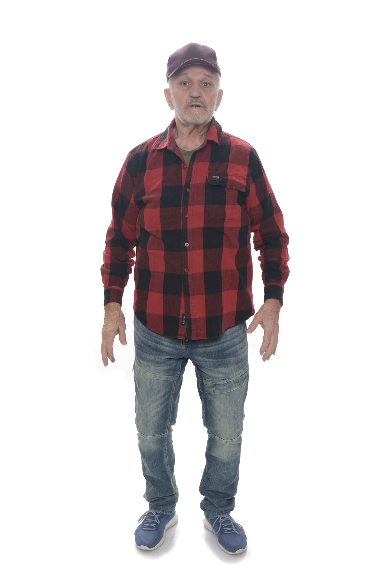
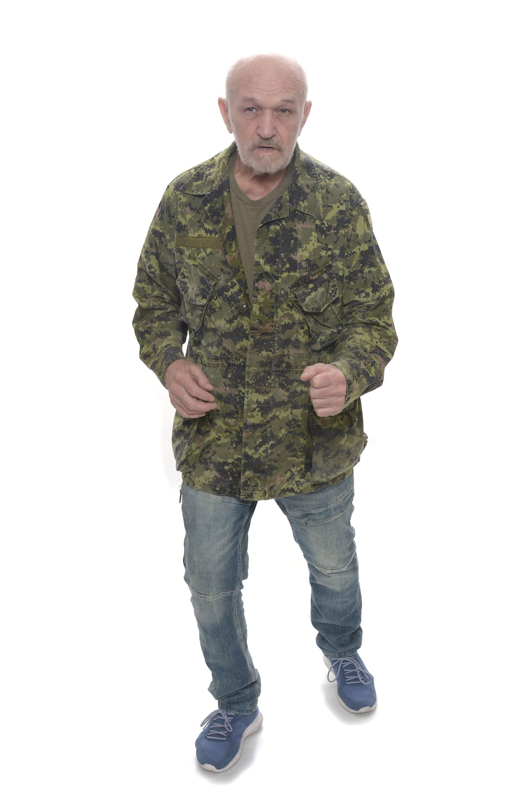
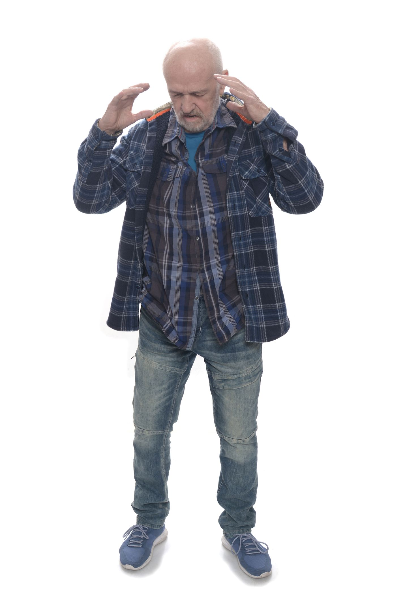
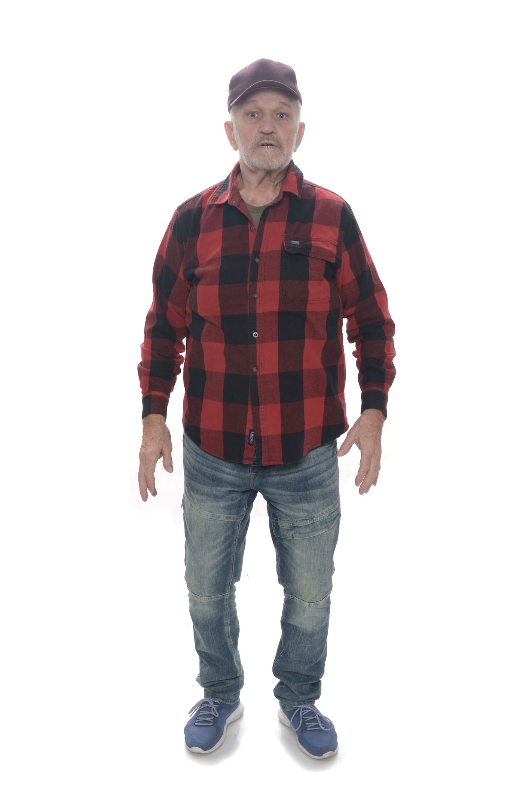
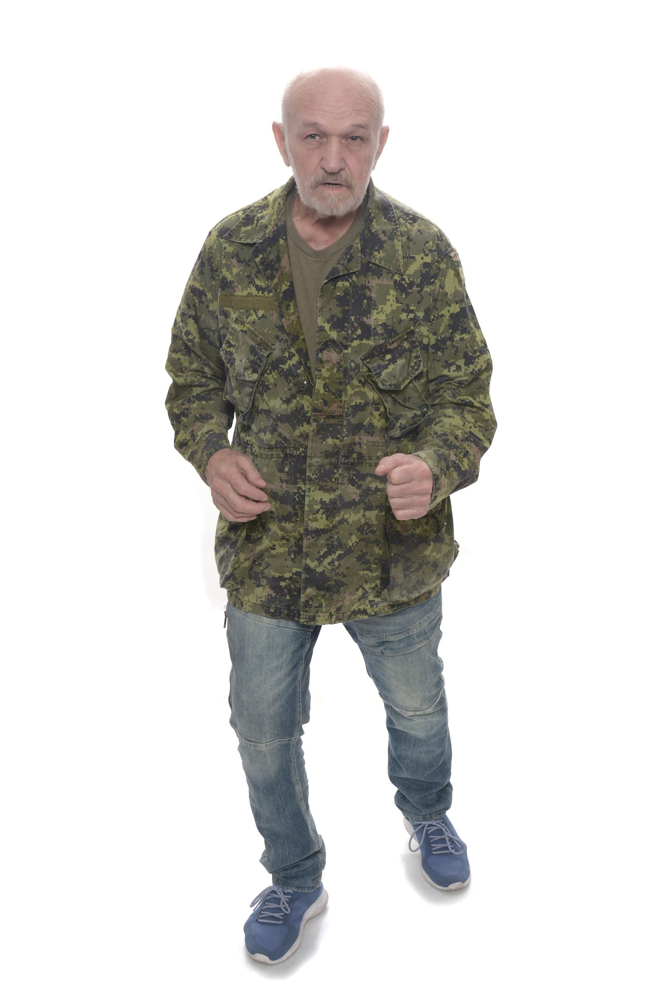
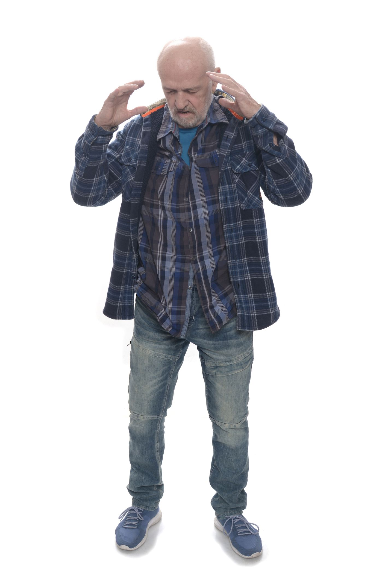
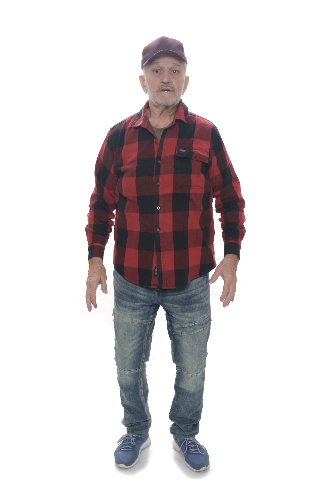
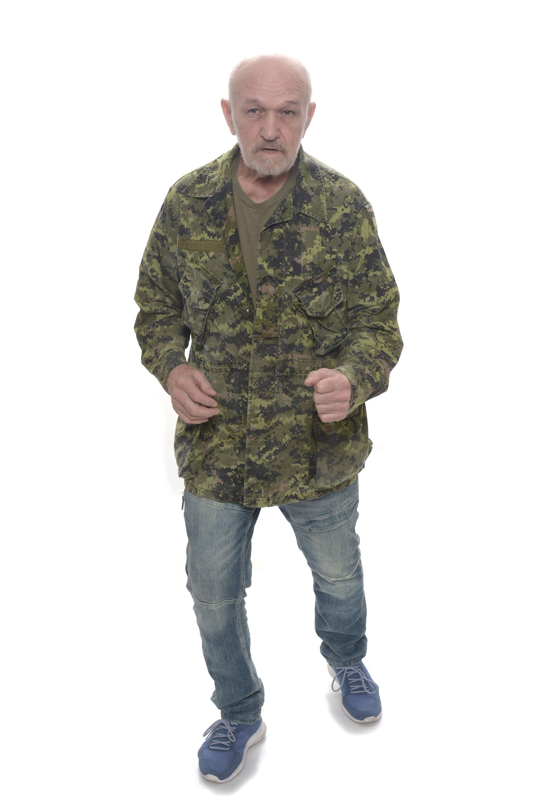
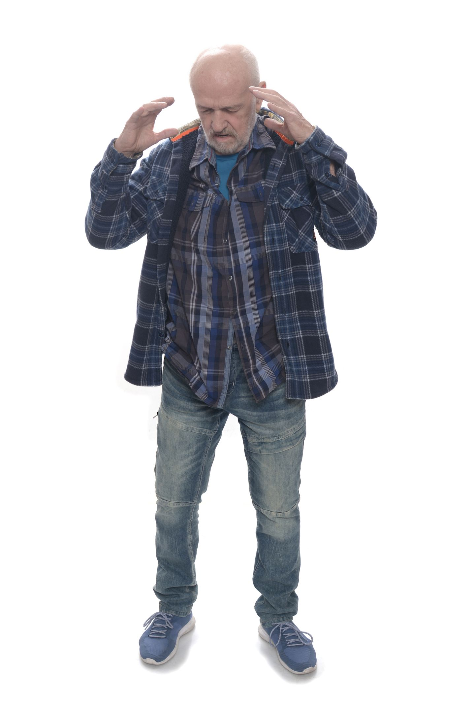

Gallery


 





Actor | Performer | Storyteller
Versatile actor known for the compelling portrayal of the Father in Eurydice by Sarah Ruhl directed by Katelyn Schearer and David Meis. With training in acting and contemporary performance at the University of Minnesota and a background as an accomplished elocutionist and public speaker, I bring depth and authenticity to every performance.
Beyond the stage, I am an experienced high-altitude mountaineer, expedition leader, and certified Hatha Yoga instructor, with over 30 years of wilderness experience. My diverse skill set includes combat, multiple European accents, and musical talent. A licensed physician and sex educator, I bring a unique combination of intellect, physicality, and emotional nuance to performances.



Email: svlenskii@gmail.com